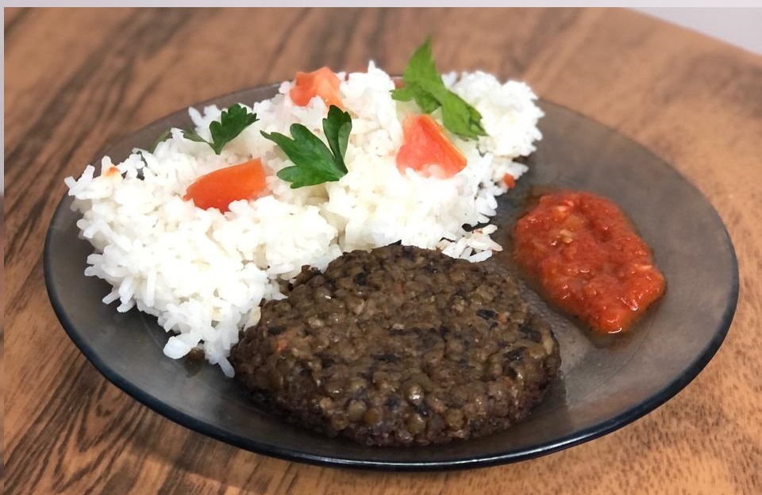

Lentil Burguer

Description:
This recipe comes from my frustration with vegetarian patties.
Veggie patties usually fall into two groups: bland mixes of vegetables with legumes, or food spiced with the only objective of making it resemble meat. I don’t care for either. Vegetables are amazing, and home cooks should strive higher than to simply mashing them together, roasting ‘em, and serving them. And vegetables aren’t meat, they shouldn’t try to emulate them. The copy will always be inferior.
This is my attempt at a veggie patty that has a complexity of flavor that rivals that of meat without trying to emulate it. I care for texture as much as I care for flavor. Because of it, it is an involved recipe that probably shouldn’t be anyone’s first attempt at it. But I promise you, it is worth the effort.
This recipe is meant for meal prepping and will leave you with fifteen or more patties. Cut the ingredients in two if you want less.
Ingredients:
- 400g of onions.
- Four cloves of garlic.
- Half a kilo of dry lentils.
- 250g of dry black beans or half a kilo of soaked black beans.
- Olive oil.
- 15g butter.
- Soy sauce.
- Hot Sauce.
- Aceto or wine vinager.
- Two big eggs or three medium ones.
- A tablespoon of cornstarch.
- Two tablespoons of flour.
- Liquid smoke.
- Salt and spices (I recommend cumin, MSG, cayen, and black pepper).
As mentioned above, this recipe is involved. It starts the night before you want to try it, as you’ll need to soak your lentils (and the beans if you’re using dry ones). The following steps assume you already have your soaked legumes ready.
Steps:
- Get two cooking pots ready with boiling water and add your lentils and beans to each one.
- Cook the lentils for a very short time, at most ten minutes as it varies with the type you use. Taste them and the second they’re al dente (they feel pasty when they’re raw) kill the heat and drain them. I don’t recommend continuing with this recipe if your lentils become soggy. Funnily enough, that's what happened to the one in the picture.
- Cook your beans until they fall apart. It should take half an hour with ones from a can. If you’re using beans you soaked yourself, add baking soda as it’ll speed up the cooking time. It could take over an hour otherwise.
- Dice the onions, there should be three big ones or four medium ones. We’re going to caramelize them so don’t worry about their raw volume.
- Heat up some olive oil with butter on a pan, and add the onions with some salt when they’re hot. Cook them at a low fire for forty minutes or so, stirring often. Take them out when they’re light or dark brown. Don’t add sugar.
- As the onions cook, dice the rest of your vegetables
- Once the onions are cooked, add the rest of the vegetables and stir for a minute or two.
- Add the cooked beans and, once they’re well-mixed, mash them with a potato masher.
- Mix the soy sauce with the aceto/vinegar, hot sauce, and liquid smoke in a glass.
- Add any spice you’re going to use, then deglaze with your mix from the previous step.
- Kill the heat and taste the mix, this is where all your flavor is so it should be overly salty and pack a punch of umami.
- In a bowl mix the cooked food with your boiled lentils and taste again. It should still be more salty than desired.
- Add the flour and cornstarch and mix. Then add the eggs and mix again. Put in the fridge for half an hour.
- You now have my favorite veggie mixture. You can do a lot of stuff with them, like my vegetable meatballs, but now let’s shape them into balls and flatten them to make patties.
- Cook your patties on a thinly oiled pan. Cover it at first to cook it through and then leave it uncovered. When the edges are hardened and you can make the patty dance on the pan, flip it. Once both sides are nicely toasted, take out your patties.
And that’s it! As I said, it’s a rather convoluted process, but it makes the best vegetarian patties you’ll try. You can play with the recipe and change any ingredient you’ll like, but some parts are vital.
The lentils must be al dente, so the end product leaves you with a crunchy exterior that has a soft interior. And the soy sauce and hot sauce are vital for the intended depth of flavor. Anything else is up to you to play with. Bon appetite!
Return to home.